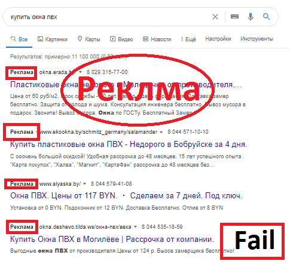
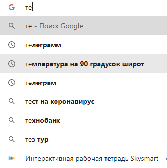
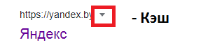

https://morseanen.livejournal.com/200103.html?media&utm_source=recommended&utm_content=main_block
livejournal.com - домен
morseanen - домент третьего уровня
200103.html - конкретный адрес html - страницы
?media&utm_source=recommended&utm_content=main_block -
после знака вопроса идут "параметры запроса", разделенные знаком &
https://news.tut.by/culture/689768.html?utm_campaign=recirculation_mail&utm_medium=bottom_news&utm_source=news.tut.by
https://varlamov.ru/3762592.html - платформа livejournal, но собственный домен.
В насоящее время одним из важных тренов IT, является машинное обучение, нейронные сети и искусственный интеллект.
FineReader?, Компьютерное зрение, Распознавание образов. https://s3-us-west-2.amazonaws.com/static.pyimagesearch.com/opencv-text-recognition/opencv_ocr_header.gif Перевод из растровых изображений в векторные (отсканированный текст -> в редактируемый текст в Word) https://www.youtube.com/watch?v=RcdW8UJYX-s MSRDQ ToDo: обсудить - https://medium.com/@bororo/10-years-of-gartner-tech-trends-6b5e7d108b0e
Панорамы есть везде кроме Беларусии.
Самый удобный сервис для Беларусии и России. Есть панорамы Минска, общественный траспорт и парковки. На телефон лучше скачать 2 приложения-яндекс-карты и яндекс-навигатор. Яндекс-транспорт можно не ставить.
Карта, которую можно редактировать самому.
На телефон удобно установить maps.me, которое работает без интернета.
http://map.nca.by/map.htmlФорматирование текста, чтобы он был весь виден в ячейке.

В панели “Пуск” выберете “Проводник”, в открывшемся окне нажмите в пустое место правой кнопкой мыши и зайдите во вкладку “свойства”. В открывшемся окне нажмите “Дополнительные параметры системы” и далее “Параметры”. Снимайте все галочки в списке - это уберет современный вид вашей операционной системы, но сильно повысит производительность.


Как закрепить первую строку в табилице
Постепенно устаревающая программа, но еще часто использующаяся, в силу исторических причин.
Бессплатен
Отсутствует регистрация через телефон.
Задача - отличать реальные тенденции от хайпа
Достаточно достоверный источник - Garthner
BigData VR - virtual reality - была на хайпе, но сейчас там застой.
выдача результатов с подмешиванием рекламы

автодополнение поиска

для одного запроса (например "развлечения") результаты поиска будут различны для разных людей
с учетом их местоположения, пола, возраста и др.
Как узнать свободен ли домен?
salon-natali.by
Если мы просто напишем имя домена в строке поиска браузера, это не обязательно будет означать,
что домен свободен, может быть и так, что домен выкуплен, но DNS не настроен.
Надо найти свой домен на сайте регистратора доменов, например - hoster.by по домену который помните, а потом узнать,
сколько он стоит чтобы вернуть себе.

SEO - Search engine optimization - действия вебмастера(человека, который делает сайты), направленные
на то, чтобы imagesсайт по запросам в google и яндекс выводился первым результатом или хотя бы на первой страницеВ мире существуют миллиарды сайтов, которые конкурируют между собой, в том числе за место в поисковой выдаче.
.by - доменнная зона Создание собственной доменной зоны, пример - yandex
Черные методы оптимизации – это нелегальные методы SEO, предполагающие автоматизацию процессов, массовость и нарушение основных правил, установленных поисковиками. Основная цель черной оптимизации – быстрый захват позиций в топах выдачи. Каждый оптимизатор должен понимать, что, выбирая стратегию черной seo-оптимизации сайта, он «помогает» ресурсу попасть под поисковые фильтры. Но многие считают такие риски совершенно оправданными, учитывая, какую прибыль они могут принести.
Череная SEO модет использоваться как и в продвижении собственного сайта, так и в захвате чужого. К
Раньше сущевствовали каталоги вместо поисковых браузеров. И в них ты в ручную искал нужный для тебя файл. Это и называется желтыми страницами.
UI - user interface UX - user experience interface - способ взаимодействия с чем-то. user experience - это опыт (позитивный либо негативный) использования UI - насколько удобно использовать UI https://habr.com/en/post/527068/
Что такое облигации? Облигации — это фактически долговые расписки. Их выпускает эмитент — компания (или государство, оно тоже может быть эмитентом), которой нужны деньги. Люди покупают облигации и таким образом дают свои деньги взаймы этой компании, рассчитывая получить определенный доход. Полная сумма, сроки и размер выплат этого дохода (если планируется несколько платежей), как правило, известны при покупке. Возможность заранее оценить свою выгоду — это то, чем облигация отличается от других ценных бумаг. В установленный срок происходит погашение облигаций, то есть эмитент выплачивает их владельцам номинальную стоимость, указанную на самих облигациях.
https://m.tut.by/news/society/726232.html
https://news.tut.by/economics/724281.html
https://lacerta.by/
https://temofeev.ru/info/articles/kak-tilda-ubivaet-rynok-veb-frilansa/
Коротко о выше сказанном)
Реэлтеры - посредственники между покупателями и продовцами квартир. Люди которые хотят получить любым способом деньги и от покупателя, и от продавца.
Стоит помнить что информация не вечная, и ее могут убрать(отобрать) с интернета.
Ctrl + S позволяет сохранить страницу. Саит это не просто 1 страница кода,
это много страниц и картинок обьедененные в 1 целое, поэтому чтобы не сохранять кучу
мусора, нужно выбирать формат mhtml.
Но что делать есле страницы уже не существует??? Ответ прост, загрузить ее с кэша.
.
Сохранять тоже надо в формате mhtml.